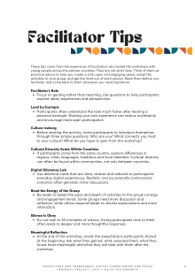

Download the facilitator tips (PDF)These tips come from the experience of facilitators who tested the workshops with young people across the partner countries. They are not strict rules. Think of them as practical advice to help you create a safe, open and engaging space, adapt the activities to your group, and get the most out of each session. Read them before you facilitate, and come back to them whenever you need inspiration.
Facilitator's role
- Focus on guiding rather than teaching. Use questions to help participants explore ideas, experiences and perspectives.
Lead by example
- Participants often understand the task much faster after hearing a personal example. Sharing your own experience can reduce uncertainty and encourage more open participation.
Culture iceberg
- Before starting the activity, invite participants to introduce themselves through three simple questions: Who are you? What connects you most to your culture? What do you hope to gain from this workshop?
Cultural diversity exists within countries
- If participants come from the same country, explore differences in regions, cities, languages, traditions and local identities. Cultural diversity can often be found within communities, not only between countries.
Digital dilemmas lab
- Use dilemma cards that are clear, diverse and relevant to participants' everyday digital experiences. Realistic and occasionally controversial scenarios often generate richer discussions.
Read the energy of the group
- Be ready to adapt the pace and depth of activities to the group's energy and engagement levels. Some groups need more discussion and reflection, while others respond better to shorter explanations and more interaction.
Silence is okay
- Do not rush to fill moments of silence. Giving participants time to think often leads to deeper and more thoughtful responses.
Meaningful reflection
- At the end of the workshop, revisit the expectations participants shared at the beginning. Ask what they gained, what surprised them, what they found most meaningful and what they will take with them after the workshop.